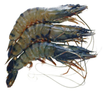
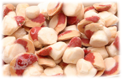

Quality Control - Nucleotides and "K-value" conceptThe content of ATP is particularly high in muscle where it provides the energy for contraction. As soon as an animal is slaughtered, cell respiration stops as well as ATP formation.Post-mortem ATP degradation leads to formation of three major nucleotide catabolites: IMP (5-24h), Inosine (days) and Hypoxanthine (weeks). In difference to volatile amines appearing at a medium- or a late-stage of spoilage, nucleotides allow the detection of very beginning of the spoilage process. Nucleotides can be quantified by HPLC or with enzymes, eg. Fresh Tester strips. Invented in the late 1950's, "K-value" is based on the quantification of nucleotides and is used as an indicator of the freshness of fish flesh. |
|
|


Principle - Freshness Assay KitNOVOCIB's PRECICE® Freshness Assay Kit provides new enzymatic tool for nucleotide quantification by measuring the absorbance at 340nm with a spectrophotometer or a microplate reader. Used enzymatic reactions are:
Know more about PRECICE® Freshness Assay Kit
|  |
|
Freshness of Cod
Know more about Cod Quality Assessment
|
 |
|
Freshness of Salmon
Know more about Salmon Quality Assessment
|
 |
|
Freshness of Shrimps
Know more about Shrimps Quality Assessment
|
 | |
Freshness of Scallops
Know more about Scallops Quality Assessment
|
 | |
K-valueIn the late 1950's, a Japanese research team (Saito et al.) proposed a new concept, called "K-value" (or "K Factor"), for the indication of the freshness of fish flesh. The K-value is based on ATP breakdown and the subsequent formation of its by-products. The K-value measures how far ATP degradation has progressed within the tissue.It is expressed as a percentage of the content of the last two final compounds of the ATP catabolic pathway (Ino and Hx) over the total content of ATP and its degradation by-products: ATP, ADP, AMP, IMP, Ino and Hx. Because ATP decomposes very quickly to IMP in most animals, a simplified K value (generally called Ki- or K’-value) was proposed. The K-value has been recognized for several decades as the most effective and objective indicator of the freshness of fish and seafood products, as well as of meat (beef, pork, lamb and poultry). The lower the K-value, the fresher the fish.
|